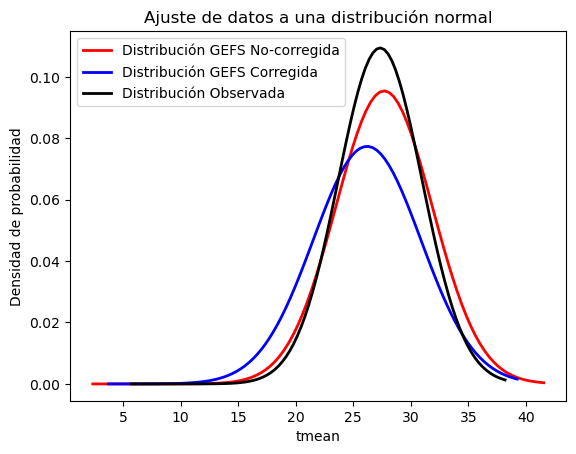
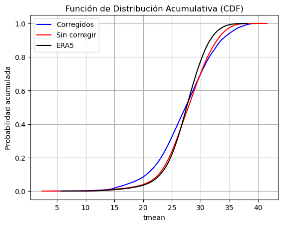

Nota
Ejercicio 2: Distribucion Tmedia diaria
Analizamos cómo el modelo representa aspectos de la distribución de una variable
En este tutorial vamos a explorar como es la distribución de probabilidades en el modelo para un dominio reducido:
Vamos a elegir un dominio reducido
Vamos a tomar datos diarios de temperatura media correspondiende a la semana 2
Vamos a calcular la función de distribución de probabilidad y la función de distribución de probabilidad acumulada
[1]:
# partimos importando los modulos a utilizar:
%matplotlib inline
import xarray as xr
import s3fs
import netCDF4
import numpy as np
import pandas as pd
import datetime
from datetime import timedelta
import os
import sys
import datetime
from scipy.stats import norm
from scipy.optimize import curve_fit
import matplotlib.pyplot as plt
Primero definimos algunas funciones que vamos a usar
[2]:
# funcion para acomodar xarrays antes de concatenarlos
def preprocess_ds(ds):
ds['S'] = ds.time.values[0]
ds['time'] = ds.time.values - ds.time.values[0]
ds = ds.rename({'time': 'leadtime'})
return ds
# funcion para calcular la CDF de los datos
def calcular_cdf(datos):
n = len(datos)
x_ordenados = np.sort(datos)
cdf = np.arange(1, n + 1) / n
return x_ordenados, cdf
Vamos a estudiar este comportamiento para el mes de diciembre. Entonces, vamos a tomar todos los pronósticos inicializados en ese mes
[3]:
#definimos algunos parámetros: dominio, variable, fecha
variable = 'tmean'
lat_n = -20
lat_s = -30
lon_w = -65
lon_e = -55
os.system('mkdir -p ./tmp')
ref_date = datetime.datetime.strptime('20101201', "%Y%m%d")
Vamos a descargar de la base de datos de sissa los datos corregidos. Observación: si quieren trabajar en otro dominio para la misma variable, van a tener que nombrar a los archivos distinto o guardarlos en otra carpeta, no en tmp
[4]:
# DATOS CORREGIDOS
fs = s3fs.S3FileSystem(anon=True)
BUCKET_NAME = 'sissa-forecast-database'
tforecast = 'subseasonal'
modelo = 'GEFSv12_corr'
list_df = []
for i in np.arange(2010, 2020, 1): # loop sobre los años
loop_date = ref_date.replace(year=i) # tomamos la fecha de referencia y le cambio el año
while loop_date < (ref_date.replace(year=i) + timedelta(days=30)): # recorremos los 30 dias desde la fecha de referencia
if loop_date.weekday() == 2: # los pronosticos están disponibles para todos los miercoles
# Defino el path
PATH = tforecast + '/' + modelo + '/' + variable + '/' + loop_date.strftime('%Y') + '/' + loop_date.strftime('%Y%m%d') + '/'
# Listamos todos los archivos dentro del bucket + PATH
awsfiles = fs.ls('s3://' + BUCKET_NAME + '/' + PATH)
df_m = []
for ii, awsfile in enumerate(awsfiles): # Recorro los archivos
if not os.path.isfile('./tmp/corr_' + variable + '_' + loop_date.strftime('%Y%m%d') + '_' + str(ii) + '.nc4'): # miro si ya no baje el datos
print('Extrayendo datos del archivo:')
print(awsfile)
with fs.open(awsfile) as f:
gefs = xr.open_dataset(f)
gefs = gefs.sel(lat=slice(lat_n, lat_s), lon=slice(lon_w, lon_e)) # Elijo el dominio de interes
gefs['M'] = ii # genero una nueva coordenada, M, para cada miembro del ensamble
ds = gefs[variable]
# Guardo el dato
ds.to_netcdf('./tmp/corr_' + variable + '_' + loop_date.strftime('%Y%m%d') + '_' + str(ii) + '.nc4')
f.close()
loop_date += timedelta(days=1) # Me muevo un dia
Extrayendo datos del archivo:
sissa-forecast-database/subseasonal/GEFSv12_corr/tmean/2010/20101201/tmean_20101201_c00.nc
Extrayendo datos del archivo:
sissa-forecast-database/subseasonal/GEFSv12_corr/tmean/2010/20101201/tmean_20101201_p01.nc
Extrayendo datos del archivo:
sissa-forecast-database/subseasonal/GEFSv12_corr/tmean/2010/20101201/tmean_20101201_p02.nc
Extrayendo datos del archivo:
sissa-forecast-database/subseasonal/GEFSv12_corr/tmean/2010/20101201/tmean_20101201_p03.nc
Extrayendo datos del archivo:
sissa-forecast-database/subseasonal/GEFSv12_corr/tmean/2010/20101201/tmean_20101201_p04.nc
Extrayendo datos del archivo:
sissa-forecast-database/subseasonal/GEFSv12_corr/tmean/2010/20101201/tmean_20101201_p05.nc
Extrayendo datos del archivo:
sissa-forecast-database/subseasonal/GEFSv12_corr/tmean/2010/20101201/tmean_20101201_p06.nc
Extrayendo datos del archivo:
sissa-forecast-database/subseasonal/GEFSv12_corr/tmean/2010/20101201/tmean_20101201_p07.nc
Extrayendo datos del archivo:
sissa-forecast-database/subseasonal/GEFSv12_corr/tmean/2010/20101201/tmean_20101201_p08.nc
Extrayendo datos del archivo:
sissa-forecast-database/subseasonal/GEFSv12_corr/tmean/2010/20101201/tmean_20101201_p09.nc
Extrayendo datos del archivo:
sissa-forecast-database/subseasonal/GEFSv12_corr/tmean/2010/20101201/tmean_20101201_p10.nc
Extrayendo datos del archivo:
sissa-forecast-database/subseasonal/GEFSv12_corr/tmean/2010/20101208/tmean_20101208_c00.nc
Extrayendo datos del archivo:
sissa-forecast-database/subseasonal/GEFSv12_corr/tmean/2010/20101208/tmean_20101208_p01.nc
Extrayendo datos del archivo:
sissa-forecast-database/subseasonal/GEFSv12_corr/tmean/2010/20101208/tmean_20101208_p02.nc
Extrayendo datos del archivo:
sissa-forecast-database/subseasonal/GEFSv12_corr/tmean/2010/20101208/tmean_20101208_p03.nc
Extrayendo datos del archivo:
sissa-forecast-database/subseasonal/GEFSv12_corr/tmean/2010/20101208/tmean_20101208_p04.nc
Extrayendo datos del archivo:
sissa-forecast-database/subseasonal/GEFSv12_corr/tmean/2010/20101208/tmean_20101208_p05.nc
Extrayendo datos del archivo:
sissa-forecast-database/subseasonal/GEFSv12_corr/tmean/2010/20101208/tmean_20101208_p06.nc
Extrayendo datos del archivo:
sissa-forecast-database/subseasonal/GEFSv12_corr/tmean/2010/20101208/tmean_20101208_p07.nc
Extrayendo datos del archivo:
sissa-forecast-database/subseasonal/GEFSv12_corr/tmean/2010/20101208/tmean_20101208_p08.nc
Extrayendo datos del archivo:
sissa-forecast-database/subseasonal/GEFSv12_corr/tmean/2010/20101208/tmean_20101208_p09.nc
Extrayendo datos del archivo:
sissa-forecast-database/subseasonal/GEFSv12_corr/tmean/2010/20101208/tmean_20101208_p10.nc
Extrayendo datos del archivo:
sissa-forecast-database/subseasonal/GEFSv12_corr/tmean/2010/20101215/tmean_20101215_c00.nc
Extrayendo datos del archivo:
sissa-forecast-database/subseasonal/GEFSv12_corr/tmean/2010/20101215/tmean_20101215_p01.nc
Extrayendo datos del archivo:
sissa-forecast-database/subseasonal/GEFSv12_corr/tmean/2010/20101215/tmean_20101215_p02.nc
Extrayendo datos del archivo:
sissa-forecast-database/subseasonal/GEFSv12_corr/tmean/2010/20101215/tmean_20101215_p03.nc
Extrayendo datos del archivo:
sissa-forecast-database/subseasonal/GEFSv12_corr/tmean/2010/20101215/tmean_20101215_p04.nc
Extrayendo datos del archivo:
sissa-forecast-database/subseasonal/GEFSv12_corr/tmean/2010/20101215/tmean_20101215_p05.nc
Extrayendo datos del archivo:
sissa-forecast-database/subseasonal/GEFSv12_corr/tmean/2010/20101215/tmean_20101215_p06.nc
Extrayendo datos del archivo:
sissa-forecast-database/subseasonal/GEFSv12_corr/tmean/2010/20101215/tmean_20101215_p07.nc
Extrayendo datos del archivo:
sissa-forecast-database/subseasonal/GEFSv12_corr/tmean/2010/20101215/tmean_20101215_p08.nc
Extrayendo datos del archivo:
sissa-forecast-database/subseasonal/GEFSv12_corr/tmean/2010/20101215/tmean_20101215_p09.nc
Extrayendo datos del archivo:
sissa-forecast-database/subseasonal/GEFSv12_corr/tmean/2010/20101215/tmean_20101215_p10.nc
Extrayendo datos del archivo:
sissa-forecast-database/subseasonal/GEFSv12_corr/tmean/2010/20101222/tmean_20101222_c00.nc
Extrayendo datos del archivo:
sissa-forecast-database/subseasonal/GEFSv12_corr/tmean/2010/20101222/tmean_20101222_p01.nc
Extrayendo datos del archivo:
sissa-forecast-database/subseasonal/GEFSv12_corr/tmean/2010/20101222/tmean_20101222_p02.nc
Extrayendo datos del archivo:
sissa-forecast-database/subseasonal/GEFSv12_corr/tmean/2010/20101222/tmean_20101222_p03.nc
Extrayendo datos del archivo:
sissa-forecast-database/subseasonal/GEFSv12_corr/tmean/2010/20101222/tmean_20101222_p04.nc
Extrayendo datos del archivo:
sissa-forecast-database/subseasonal/GEFSv12_corr/tmean/2010/20101222/tmean_20101222_p05.nc
Extrayendo datos del archivo:
sissa-forecast-database/subseasonal/GEFSv12_corr/tmean/2010/20101222/tmean_20101222_p06.nc
Extrayendo datos del archivo:
sissa-forecast-database/subseasonal/GEFSv12_corr/tmean/2010/20101222/tmean_20101222_p07.nc
Extrayendo datos del archivo:
sissa-forecast-database/subseasonal/GEFSv12_corr/tmean/2010/20101222/tmean_20101222_p08.nc
Extrayendo datos del archivo:
sissa-forecast-database/subseasonal/GEFSv12_corr/tmean/2010/20101222/tmean_20101222_p09.nc
Extrayendo datos del archivo:
sissa-forecast-database/subseasonal/GEFSv12_corr/tmean/2010/20101222/tmean_20101222_p10.nc
Extrayendo datos del archivo:
sissa-forecast-database/subseasonal/GEFSv12_corr/tmean/2010/20101229/tmean_20101229_c00.nc
Extrayendo datos del archivo:
sissa-forecast-database/subseasonal/GEFSv12_corr/tmean/2010/20101229/tmean_20101229_p01.nc
Extrayendo datos del archivo:
sissa-forecast-database/subseasonal/GEFSv12_corr/tmean/2010/20101229/tmean_20101229_p02.nc
Extrayendo datos del archivo:
sissa-forecast-database/subseasonal/GEFSv12_corr/tmean/2010/20101229/tmean_20101229_p03.nc
Extrayendo datos del archivo:
sissa-forecast-database/subseasonal/GEFSv12_corr/tmean/2010/20101229/tmean_20101229_p04.nc
Extrayendo datos del archivo:
sissa-forecast-database/subseasonal/GEFSv12_corr/tmean/2010/20101229/tmean_20101229_p05.nc
Extrayendo datos del archivo:
sissa-forecast-database/subseasonal/GEFSv12_corr/tmean/2010/20101229/tmean_20101229_p06.nc
Extrayendo datos del archivo:
sissa-forecast-database/subseasonal/GEFSv12_corr/tmean/2010/20101229/tmean_20101229_p07.nc
Extrayendo datos del archivo:
sissa-forecast-database/subseasonal/GEFSv12_corr/tmean/2010/20101229/tmean_20101229_p08.nc
Extrayendo datos del archivo:
sissa-forecast-database/subseasonal/GEFSv12_corr/tmean/2010/20101229/tmean_20101229_p09.nc
Extrayendo datos del archivo:
sissa-forecast-database/subseasonal/GEFSv12_corr/tmean/2010/20101229/tmean_20101229_p10.nc
Extrayendo datos del archivo:
sissa-forecast-database/subseasonal/GEFSv12_corr/tmean/2011/20111207/tmean_20111207_c00.nc
Extrayendo datos del archivo:
sissa-forecast-database/subseasonal/GEFSv12_corr/tmean/2011/20111207/tmean_20111207_p01.nc
Extrayendo datos del archivo:
sissa-forecast-database/subseasonal/GEFSv12_corr/tmean/2011/20111207/tmean_20111207_p02.nc
Extrayendo datos del archivo:
sissa-forecast-database/subseasonal/GEFSv12_corr/tmean/2011/20111207/tmean_20111207_p03.nc
Extrayendo datos del archivo:
sissa-forecast-database/subseasonal/GEFSv12_corr/tmean/2011/20111207/tmean_20111207_p04.nc
Extrayendo datos del archivo:
sissa-forecast-database/subseasonal/GEFSv12_corr/tmean/2011/20111207/tmean_20111207_p05.nc
Extrayendo datos del archivo:
sissa-forecast-database/subseasonal/GEFSv12_corr/tmean/2011/20111207/tmean_20111207_p06.nc
Extrayendo datos del archivo:
sissa-forecast-database/subseasonal/GEFSv12_corr/tmean/2011/20111207/tmean_20111207_p07.nc
Extrayendo datos del archivo:
sissa-forecast-database/subseasonal/GEFSv12_corr/tmean/2011/20111207/tmean_20111207_p08.nc
Extrayendo datos del archivo:
sissa-forecast-database/subseasonal/GEFSv12_corr/tmean/2011/20111207/tmean_20111207_p09.nc
Extrayendo datos del archivo:
sissa-forecast-database/subseasonal/GEFSv12_corr/tmean/2011/20111207/tmean_20111207_p10.nc
Extrayendo datos del archivo:
sissa-forecast-database/subseasonal/GEFSv12_corr/tmean/2011/20111214/tmean_20111214_c00.nc
Extrayendo datos del archivo:
sissa-forecast-database/subseasonal/GEFSv12_corr/tmean/2011/20111214/tmean_20111214_p01.nc
Extrayendo datos del archivo:
sissa-forecast-database/subseasonal/GEFSv12_corr/tmean/2011/20111214/tmean_20111214_p02.nc
Extrayendo datos del archivo:
sissa-forecast-database/subseasonal/GEFSv12_corr/tmean/2011/20111214/tmean_20111214_p03.nc
Extrayendo datos del archivo:
sissa-forecast-database/subseasonal/GEFSv12_corr/tmean/2011/20111214/tmean_20111214_p04.nc
Extrayendo datos del archivo:
sissa-forecast-database/subseasonal/GEFSv12_corr/tmean/2011/20111214/tmean_20111214_p05.nc
Extrayendo datos del archivo:
sissa-forecast-database/subseasonal/GEFSv12_corr/tmean/2011/20111214/tmean_20111214_p06.nc
Extrayendo datos del archivo:
sissa-forecast-database/subseasonal/GEFSv12_corr/tmean/2011/20111214/tmean_20111214_p07.nc
Extrayendo datos del archivo:
sissa-forecast-database/subseasonal/GEFSv12_corr/tmean/2011/20111214/tmean_20111214_p08.nc
Extrayendo datos del archivo:
sissa-forecast-database/subseasonal/GEFSv12_corr/tmean/2011/20111214/tmean_20111214_p09.nc
Extrayendo datos del archivo:
sissa-forecast-database/subseasonal/GEFSv12_corr/tmean/2011/20111214/tmean_20111214_p10.nc
Extrayendo datos del archivo:
sissa-forecast-database/subseasonal/GEFSv12_corr/tmean/2011/20111221/tmean_20111221_c00.nc
Extrayendo datos del archivo:
sissa-forecast-database/subseasonal/GEFSv12_corr/tmean/2011/20111221/tmean_20111221_p01.nc
Extrayendo datos del archivo:
sissa-forecast-database/subseasonal/GEFSv12_corr/tmean/2011/20111221/tmean_20111221_p02.nc
Extrayendo datos del archivo:
sissa-forecast-database/subseasonal/GEFSv12_corr/tmean/2011/20111221/tmean_20111221_p03.nc
Extrayendo datos del archivo:
sissa-forecast-database/subseasonal/GEFSv12_corr/tmean/2011/20111221/tmean_20111221_p04.nc
Extrayendo datos del archivo:
sissa-forecast-database/subseasonal/GEFSv12_corr/tmean/2011/20111221/tmean_20111221_p05.nc
Extrayendo datos del archivo:
sissa-forecast-database/subseasonal/GEFSv12_corr/tmean/2011/20111221/tmean_20111221_p06.nc
Extrayendo datos del archivo:
sissa-forecast-database/subseasonal/GEFSv12_corr/tmean/2011/20111221/tmean_20111221_p07.nc
Extrayendo datos del archivo:
sissa-forecast-database/subseasonal/GEFSv12_corr/tmean/2011/20111221/tmean_20111221_p08.nc
Extrayendo datos del archivo:
sissa-forecast-database/subseasonal/GEFSv12_corr/tmean/2011/20111221/tmean_20111221_p09.nc
Extrayendo datos del archivo:
sissa-forecast-database/subseasonal/GEFSv12_corr/tmean/2011/20111221/tmean_20111221_p10.nc
Extrayendo datos del archivo:
sissa-forecast-database/subseasonal/GEFSv12_corr/tmean/2011/20111228/tmean_20111228_c00.nc
Extrayendo datos del archivo:
sissa-forecast-database/subseasonal/GEFSv12_corr/tmean/2011/20111228/tmean_20111228_p01.nc
Extrayendo datos del archivo:
sissa-forecast-database/subseasonal/GEFSv12_corr/tmean/2011/20111228/tmean_20111228_p02.nc
Extrayendo datos del archivo:
sissa-forecast-database/subseasonal/GEFSv12_corr/tmean/2011/20111228/tmean_20111228_p03.nc
Extrayendo datos del archivo:
sissa-forecast-database/subseasonal/GEFSv12_corr/tmean/2011/20111228/tmean_20111228_p04.nc
Extrayendo datos del archivo:
sissa-forecast-database/subseasonal/GEFSv12_corr/tmean/2011/20111228/tmean_20111228_p05.nc
Extrayendo datos del archivo:
sissa-forecast-database/subseasonal/GEFSv12_corr/tmean/2011/20111228/tmean_20111228_p06.nc
Extrayendo datos del archivo:
sissa-forecast-database/subseasonal/GEFSv12_corr/tmean/2011/20111228/tmean_20111228_p07.nc
Extrayendo datos del archivo:
sissa-forecast-database/subseasonal/GEFSv12_corr/tmean/2011/20111228/tmean_20111228_p08.nc
Extrayendo datos del archivo:
sissa-forecast-database/subseasonal/GEFSv12_corr/tmean/2011/20111228/tmean_20111228_p09.nc
Extrayendo datos del archivo:
sissa-forecast-database/subseasonal/GEFSv12_corr/tmean/2011/20111228/tmean_20111228_p10.nc
Extrayendo datos del archivo:
sissa-forecast-database/subseasonal/GEFSv12_corr/tmean/2012/20121205/tmean_20121205_c00.nc
Extrayendo datos del archivo:
sissa-forecast-database/subseasonal/GEFSv12_corr/tmean/2012/20121205/tmean_20121205_p01.nc
Extrayendo datos del archivo:
sissa-forecast-database/subseasonal/GEFSv12_corr/tmean/2012/20121205/tmean_20121205_p02.nc
Extrayendo datos del archivo:
sissa-forecast-database/subseasonal/GEFSv12_corr/tmean/2012/20121205/tmean_20121205_p03.nc
Extrayendo datos del archivo:
sissa-forecast-database/subseasonal/GEFSv12_corr/tmean/2012/20121205/tmean_20121205_p04.nc
Extrayendo datos del archivo:
sissa-forecast-database/subseasonal/GEFSv12_corr/tmean/2012/20121205/tmean_20121205_p05.nc
Extrayendo datos del archivo:
sissa-forecast-database/subseasonal/GEFSv12_corr/tmean/2012/20121205/tmean_20121205_p06.nc
Extrayendo datos del archivo:
sissa-forecast-database/subseasonal/GEFSv12_corr/tmean/2012/20121205/tmean_20121205_p07.nc
Extrayendo datos del archivo:
sissa-forecast-database/subseasonal/GEFSv12_corr/tmean/2012/20121205/tmean_20121205_p08.nc
Extrayendo datos del archivo:
sissa-forecast-database/subseasonal/GEFSv12_corr/tmean/2012/20121205/tmean_20121205_p09.nc
Extrayendo datos del archivo:
sissa-forecast-database/subseasonal/GEFSv12_corr/tmean/2012/20121205/tmean_20121205_p10.nc
Extrayendo datos del archivo:
sissa-forecast-database/subseasonal/GEFSv12_corr/tmean/2012/20121212/tmean_20121212_c00.nc
Extrayendo datos del archivo:
sissa-forecast-database/subseasonal/GEFSv12_corr/tmean/2012/20121212/tmean_20121212_p01.nc
Extrayendo datos del archivo:
sissa-forecast-database/subseasonal/GEFSv12_corr/tmean/2012/20121212/tmean_20121212_p02.nc
Extrayendo datos del archivo:
sissa-forecast-database/subseasonal/GEFSv12_corr/tmean/2012/20121212/tmean_20121212_p03.nc
Extrayendo datos del archivo:
sissa-forecast-database/subseasonal/GEFSv12_corr/tmean/2012/20121212/tmean_20121212_p04.nc
Extrayendo datos del archivo:
sissa-forecast-database/subseasonal/GEFSv12_corr/tmean/2012/20121212/tmean_20121212_p05.nc
Extrayendo datos del archivo:
sissa-forecast-database/subseasonal/GEFSv12_corr/tmean/2012/20121212/tmean_20121212_p06.nc
Extrayendo datos del archivo:
sissa-forecast-database/subseasonal/GEFSv12_corr/tmean/2012/20121212/tmean_20121212_p07.nc
Extrayendo datos del archivo:
sissa-forecast-database/subseasonal/GEFSv12_corr/tmean/2012/20121212/tmean_20121212_p08.nc
Extrayendo datos del archivo:
sissa-forecast-database/subseasonal/GEFSv12_corr/tmean/2012/20121212/tmean_20121212_p09.nc
Extrayendo datos del archivo:
sissa-forecast-database/subseasonal/GEFSv12_corr/tmean/2012/20121212/tmean_20121212_p10.nc
Extrayendo datos del archivo:
sissa-forecast-database/subseasonal/GEFSv12_corr/tmean/2012/20121219/tmean_20121219_c00.nc
Extrayendo datos del archivo:
sissa-forecast-database/subseasonal/GEFSv12_corr/tmean/2012/20121219/tmean_20121219_p01.nc
Extrayendo datos del archivo:
sissa-forecast-database/subseasonal/GEFSv12_corr/tmean/2012/20121219/tmean_20121219_p02.nc
Extrayendo datos del archivo:
sissa-forecast-database/subseasonal/GEFSv12_corr/tmean/2012/20121219/tmean_20121219_p03.nc
Extrayendo datos del archivo:
sissa-forecast-database/subseasonal/GEFSv12_corr/tmean/2012/20121219/tmean_20121219_p04.nc
Extrayendo datos del archivo:
sissa-forecast-database/subseasonal/GEFSv12_corr/tmean/2012/20121219/tmean_20121219_p05.nc
Extrayendo datos del archivo:
sissa-forecast-database/subseasonal/GEFSv12_corr/tmean/2012/20121219/tmean_20121219_p06.nc
Extrayendo datos del archivo:
sissa-forecast-database/subseasonal/GEFSv12_corr/tmean/2012/20121219/tmean_20121219_p07.nc
Extrayendo datos del archivo:
sissa-forecast-database/subseasonal/GEFSv12_corr/tmean/2012/20121219/tmean_20121219_p08.nc
Extrayendo datos del archivo:
sissa-forecast-database/subseasonal/GEFSv12_corr/tmean/2012/20121219/tmean_20121219_p09.nc
Extrayendo datos del archivo:
sissa-forecast-database/subseasonal/GEFSv12_corr/tmean/2012/20121219/tmean_20121219_p10.nc
Extrayendo datos del archivo:
sissa-forecast-database/subseasonal/GEFSv12_corr/tmean/2012/20121226/tmean_20121226_c00.nc
Extrayendo datos del archivo:
sissa-forecast-database/subseasonal/GEFSv12_corr/tmean/2012/20121226/tmean_20121226_p01.nc
Extrayendo datos del archivo:
sissa-forecast-database/subseasonal/GEFSv12_corr/tmean/2012/20121226/tmean_20121226_p02.nc
Extrayendo datos del archivo:
sissa-forecast-database/subseasonal/GEFSv12_corr/tmean/2012/20121226/tmean_20121226_p03.nc
Extrayendo datos del archivo:
sissa-forecast-database/subseasonal/GEFSv12_corr/tmean/2012/20121226/tmean_20121226_p04.nc
Extrayendo datos del archivo:
sissa-forecast-database/subseasonal/GEFSv12_corr/tmean/2012/20121226/tmean_20121226_p05.nc
Extrayendo datos del archivo:
sissa-forecast-database/subseasonal/GEFSv12_corr/tmean/2012/20121226/tmean_20121226_p06.nc
Extrayendo datos del archivo:
sissa-forecast-database/subseasonal/GEFSv12_corr/tmean/2012/20121226/tmean_20121226_p07.nc
Extrayendo datos del archivo:
sissa-forecast-database/subseasonal/GEFSv12_corr/tmean/2012/20121226/tmean_20121226_p08.nc
Extrayendo datos del archivo:
sissa-forecast-database/subseasonal/GEFSv12_corr/tmean/2012/20121226/tmean_20121226_p09.nc
Extrayendo datos del archivo:
sissa-forecast-database/subseasonal/GEFSv12_corr/tmean/2012/20121226/tmean_20121226_p10.nc
Extrayendo datos del archivo:
sissa-forecast-database/subseasonal/GEFSv12_corr/tmean/2013/20131204/tmean_20131204_c00.nc
Extrayendo datos del archivo:
sissa-forecast-database/subseasonal/GEFSv12_corr/tmean/2013/20131204/tmean_20131204_p01.nc
Extrayendo datos del archivo:
sissa-forecast-database/subseasonal/GEFSv12_corr/tmean/2013/20131204/tmean_20131204_p02.nc
Extrayendo datos del archivo:
sissa-forecast-database/subseasonal/GEFSv12_corr/tmean/2013/20131204/tmean_20131204_p03.nc
Extrayendo datos del archivo:
sissa-forecast-database/subseasonal/GEFSv12_corr/tmean/2013/20131204/tmean_20131204_p04.nc
Extrayendo datos del archivo:
sissa-forecast-database/subseasonal/GEFSv12_corr/tmean/2013/20131204/tmean_20131204_p05.nc
Extrayendo datos del archivo:
sissa-forecast-database/subseasonal/GEFSv12_corr/tmean/2013/20131204/tmean_20131204_p06.nc
Extrayendo datos del archivo:
sissa-forecast-database/subseasonal/GEFSv12_corr/tmean/2013/20131204/tmean_20131204_p07.nc
Extrayendo datos del archivo:
sissa-forecast-database/subseasonal/GEFSv12_corr/tmean/2013/20131204/tmean_20131204_p08.nc
Extrayendo datos del archivo:
sissa-forecast-database/subseasonal/GEFSv12_corr/tmean/2013/20131204/tmean_20131204_p09.nc
Extrayendo datos del archivo:
sissa-forecast-database/subseasonal/GEFSv12_corr/tmean/2013/20131204/tmean_20131204_p10.nc
Extrayendo datos del archivo:
sissa-forecast-database/subseasonal/GEFSv12_corr/tmean/2013/20131211/tmean_20131211_c00.nc
Extrayendo datos del archivo:
sissa-forecast-database/subseasonal/GEFSv12_corr/tmean/2013/20131211/tmean_20131211_p01.nc
Extrayendo datos del archivo:
sissa-forecast-database/subseasonal/GEFSv12_corr/tmean/2013/20131211/tmean_20131211_p02.nc
Extrayendo datos del archivo:
sissa-forecast-database/subseasonal/GEFSv12_corr/tmean/2013/20131211/tmean_20131211_p03.nc
Extrayendo datos del archivo:
sissa-forecast-database/subseasonal/GEFSv12_corr/tmean/2013/20131211/tmean_20131211_p04.nc
Extrayendo datos del archivo:
sissa-forecast-database/subseasonal/GEFSv12_corr/tmean/2013/20131211/tmean_20131211_p05.nc
Extrayendo datos del archivo:
sissa-forecast-database/subseasonal/GEFSv12_corr/tmean/2013/20131211/tmean_20131211_p06.nc
Extrayendo datos del archivo:
sissa-forecast-database/subseasonal/GEFSv12_corr/tmean/2013/20131211/tmean_20131211_p07.nc
Extrayendo datos del archivo:
sissa-forecast-database/subseasonal/GEFSv12_corr/tmean/2013/20131211/tmean_20131211_p08.nc
Extrayendo datos del archivo:
sissa-forecast-database/subseasonal/GEFSv12_corr/tmean/2013/20131211/tmean_20131211_p09.nc
Extrayendo datos del archivo:
sissa-forecast-database/subseasonal/GEFSv12_corr/tmean/2013/20131211/tmean_20131211_p10.nc
Extrayendo datos del archivo:
sissa-forecast-database/subseasonal/GEFSv12_corr/tmean/2013/20131218/tmean_20131218_c00.nc
Extrayendo datos del archivo:
sissa-forecast-database/subseasonal/GEFSv12_corr/tmean/2013/20131218/tmean_20131218_p01.nc
Extrayendo datos del archivo:
sissa-forecast-database/subseasonal/GEFSv12_corr/tmean/2013/20131218/tmean_20131218_p02.nc
Extrayendo datos del archivo:
sissa-forecast-database/subseasonal/GEFSv12_corr/tmean/2013/20131218/tmean_20131218_p03.nc
Extrayendo datos del archivo:
sissa-forecast-database/subseasonal/GEFSv12_corr/tmean/2013/20131218/tmean_20131218_p04.nc
Extrayendo datos del archivo:
sissa-forecast-database/subseasonal/GEFSv12_corr/tmean/2013/20131218/tmean_20131218_p05.nc
Extrayendo datos del archivo:
sissa-forecast-database/subseasonal/GEFSv12_corr/tmean/2013/20131218/tmean_20131218_p06.nc
Extrayendo datos del archivo:
sissa-forecast-database/subseasonal/GEFSv12_corr/tmean/2013/20131218/tmean_20131218_p07.nc
Extrayendo datos del archivo:
sissa-forecast-database/subseasonal/GEFSv12_corr/tmean/2013/20131218/tmean_20131218_p08.nc
Extrayendo datos del archivo:
sissa-forecast-database/subseasonal/GEFSv12_corr/tmean/2013/20131218/tmean_20131218_p09.nc
Extrayendo datos del archivo:
sissa-forecast-database/subseasonal/GEFSv12_corr/tmean/2013/20131218/tmean_20131218_p10.nc
Extrayendo datos del archivo:
sissa-forecast-database/subseasonal/GEFSv12_corr/tmean/2013/20131225/tmean_20131225_c00.nc
Extrayendo datos del archivo:
sissa-forecast-database/subseasonal/GEFSv12_corr/tmean/2013/20131225/tmean_20131225_p01.nc
Extrayendo datos del archivo:
sissa-forecast-database/subseasonal/GEFSv12_corr/tmean/2013/20131225/tmean_20131225_p02.nc
Extrayendo datos del archivo:
sissa-forecast-database/subseasonal/GEFSv12_corr/tmean/2013/20131225/tmean_20131225_p03.nc
Extrayendo datos del archivo:
sissa-forecast-database/subseasonal/GEFSv12_corr/tmean/2013/20131225/tmean_20131225_p04.nc
Extrayendo datos del archivo:
sissa-forecast-database/subseasonal/GEFSv12_corr/tmean/2013/20131225/tmean_20131225_p05.nc
Extrayendo datos del archivo:
sissa-forecast-database/subseasonal/GEFSv12_corr/tmean/2013/20131225/tmean_20131225_p06.nc
Extrayendo datos del archivo:
sissa-forecast-database/subseasonal/GEFSv12_corr/tmean/2013/20131225/tmean_20131225_p07.nc
Extrayendo datos del archivo:
sissa-forecast-database/subseasonal/GEFSv12_corr/tmean/2013/20131225/tmean_20131225_p08.nc
Extrayendo datos del archivo:
sissa-forecast-database/subseasonal/GEFSv12_corr/tmean/2013/20131225/tmean_20131225_p09.nc
Extrayendo datos del archivo:
sissa-forecast-database/subseasonal/GEFSv12_corr/tmean/2013/20131225/tmean_20131225_p10.nc
Extrayendo datos del archivo:
sissa-forecast-database/subseasonal/GEFSv12_corr/tmean/2014/20141203/tmean_20141203_c00.nc
Extrayendo datos del archivo:
sissa-forecast-database/subseasonal/GEFSv12_corr/tmean/2014/20141203/tmean_20141203_p01.nc
Extrayendo datos del archivo:
sissa-forecast-database/subseasonal/GEFSv12_corr/tmean/2014/20141203/tmean_20141203_p02.nc
Extrayendo datos del archivo:
sissa-forecast-database/subseasonal/GEFSv12_corr/tmean/2014/20141203/tmean_20141203_p03.nc
Extrayendo datos del archivo:
sissa-forecast-database/subseasonal/GEFSv12_corr/tmean/2014/20141203/tmean_20141203_p04.nc
Extrayendo datos del archivo:
sissa-forecast-database/subseasonal/GEFSv12_corr/tmean/2014/20141203/tmean_20141203_p05.nc
Extrayendo datos del archivo:
sissa-forecast-database/subseasonal/GEFSv12_corr/tmean/2014/20141203/tmean_20141203_p06.nc
Extrayendo datos del archivo:
sissa-forecast-database/subseasonal/GEFSv12_corr/tmean/2014/20141203/tmean_20141203_p07.nc
Extrayendo datos del archivo:
sissa-forecast-database/subseasonal/GEFSv12_corr/tmean/2014/20141203/tmean_20141203_p08.nc
Extrayendo datos del archivo:
sissa-forecast-database/subseasonal/GEFSv12_corr/tmean/2014/20141203/tmean_20141203_p09.nc
Extrayendo datos del archivo:
sissa-forecast-database/subseasonal/GEFSv12_corr/tmean/2014/20141203/tmean_20141203_p10.nc
Extrayendo datos del archivo:
sissa-forecast-database/subseasonal/GEFSv12_corr/tmean/2014/20141210/tmean_20141210_c00.nc
Extrayendo datos del archivo:
sissa-forecast-database/subseasonal/GEFSv12_corr/tmean/2014/20141210/tmean_20141210_p01.nc
Extrayendo datos del archivo:
sissa-forecast-database/subseasonal/GEFSv12_corr/tmean/2014/20141210/tmean_20141210_p02.nc
Extrayendo datos del archivo:
sissa-forecast-database/subseasonal/GEFSv12_corr/tmean/2014/20141210/tmean_20141210_p03.nc
Extrayendo datos del archivo:
sissa-forecast-database/subseasonal/GEFSv12_corr/tmean/2014/20141210/tmean_20141210_p04.nc
Extrayendo datos del archivo:
sissa-forecast-database/subseasonal/GEFSv12_corr/tmean/2014/20141210/tmean_20141210_p05.nc
Extrayendo datos del archivo:
sissa-forecast-database/subseasonal/GEFSv12_corr/tmean/2014/20141210/tmean_20141210_p06.nc
Extrayendo datos del archivo:
sissa-forecast-database/subseasonal/GEFSv12_corr/tmean/2014/20141210/tmean_20141210_p07.nc
Extrayendo datos del archivo:
sissa-forecast-database/subseasonal/GEFSv12_corr/tmean/2014/20141210/tmean_20141210_p08.nc
Extrayendo datos del archivo:
sissa-forecast-database/subseasonal/GEFSv12_corr/tmean/2014/20141210/tmean_20141210_p09.nc
Extrayendo datos del archivo:
sissa-forecast-database/subseasonal/GEFSv12_corr/tmean/2014/20141210/tmean_20141210_p10.nc
Extrayendo datos del archivo:
sissa-forecast-database/subseasonal/GEFSv12_corr/tmean/2014/20141217/tmean_20141217_c00.nc
Extrayendo datos del archivo:
sissa-forecast-database/subseasonal/GEFSv12_corr/tmean/2014/20141217/tmean_20141217_p01.nc
Extrayendo datos del archivo:
sissa-forecast-database/subseasonal/GEFSv12_corr/tmean/2014/20141217/tmean_20141217_p02.nc
Extrayendo datos del archivo:
sissa-forecast-database/subseasonal/GEFSv12_corr/tmean/2014/20141217/tmean_20141217_p03.nc
Extrayendo datos del archivo:
sissa-forecast-database/subseasonal/GEFSv12_corr/tmean/2014/20141217/tmean_20141217_p04.nc
Extrayendo datos del archivo:
sissa-forecast-database/subseasonal/GEFSv12_corr/tmean/2014/20141217/tmean_20141217_p05.nc
Extrayendo datos del archivo:
sissa-forecast-database/subseasonal/GEFSv12_corr/tmean/2014/20141217/tmean_20141217_p06.nc
Extrayendo datos del archivo:
sissa-forecast-database/subseasonal/GEFSv12_corr/tmean/2014/20141217/tmean_20141217_p07.nc
Extrayendo datos del archivo:
sissa-forecast-database/subseasonal/GEFSv12_corr/tmean/2014/20141217/tmean_20141217_p08.nc
Extrayendo datos del archivo:
sissa-forecast-database/subseasonal/GEFSv12_corr/tmean/2014/20141217/tmean_20141217_p09.nc
Extrayendo datos del archivo:
sissa-forecast-database/subseasonal/GEFSv12_corr/tmean/2014/20141217/tmean_20141217_p10.nc
Extrayendo datos del archivo:
sissa-forecast-database/subseasonal/GEFSv12_corr/tmean/2014/20141224/tmean_20141224_c00.nc
Extrayendo datos del archivo:
sissa-forecast-database/subseasonal/GEFSv12_corr/tmean/2014/20141224/tmean_20141224_p01.nc
Extrayendo datos del archivo:
sissa-forecast-database/subseasonal/GEFSv12_corr/tmean/2014/20141224/tmean_20141224_p02.nc
Extrayendo datos del archivo:
sissa-forecast-database/subseasonal/GEFSv12_corr/tmean/2014/20141224/tmean_20141224_p03.nc
Extrayendo datos del archivo:
sissa-forecast-database/subseasonal/GEFSv12_corr/tmean/2014/20141224/tmean_20141224_p04.nc
Extrayendo datos del archivo:
sissa-forecast-database/subseasonal/GEFSv12_corr/tmean/2014/20141224/tmean_20141224_p05.nc
Extrayendo datos del archivo:
sissa-forecast-database/subseasonal/GEFSv12_corr/tmean/2014/20141224/tmean_20141224_p06.nc
Extrayendo datos del archivo:
sissa-forecast-database/subseasonal/GEFSv12_corr/tmean/2014/20141224/tmean_20141224_p07.nc
Extrayendo datos del archivo:
sissa-forecast-database/subseasonal/GEFSv12_corr/tmean/2014/20141224/tmean_20141224_p08.nc
Extrayendo datos del archivo:
sissa-forecast-database/subseasonal/GEFSv12_corr/tmean/2014/20141224/tmean_20141224_p09.nc
Extrayendo datos del archivo:
sissa-forecast-database/subseasonal/GEFSv12_corr/tmean/2014/20141224/tmean_20141224_p10.nc
Extrayendo datos del archivo:
sissa-forecast-database/subseasonal/GEFSv12_corr/tmean/2015/20151202/tmean_20151202_c00.nc
Extrayendo datos del archivo:
sissa-forecast-database/subseasonal/GEFSv12_corr/tmean/2015/20151202/tmean_20151202_p01.nc
Extrayendo datos del archivo:
sissa-forecast-database/subseasonal/GEFSv12_corr/tmean/2015/20151202/tmean_20151202_p02.nc
Extrayendo datos del archivo:
sissa-forecast-database/subseasonal/GEFSv12_corr/tmean/2015/20151202/tmean_20151202_p03.nc
Extrayendo datos del archivo:
sissa-forecast-database/subseasonal/GEFSv12_corr/tmean/2015/20151202/tmean_20151202_p04.nc
Extrayendo datos del archivo:
sissa-forecast-database/subseasonal/GEFSv12_corr/tmean/2015/20151202/tmean_20151202_p05.nc
Extrayendo datos del archivo:
sissa-forecast-database/subseasonal/GEFSv12_corr/tmean/2015/20151202/tmean_20151202_p06.nc
Extrayendo datos del archivo:
sissa-forecast-database/subseasonal/GEFSv12_corr/tmean/2015/20151202/tmean_20151202_p07.nc
Extrayendo datos del archivo:
sissa-forecast-database/subseasonal/GEFSv12_corr/tmean/2015/20151202/tmean_20151202_p08.nc
Extrayendo datos del archivo:
sissa-forecast-database/subseasonal/GEFSv12_corr/tmean/2015/20151202/tmean_20151202_p09.nc
Extrayendo datos del archivo:
sissa-forecast-database/subseasonal/GEFSv12_corr/tmean/2015/20151202/tmean_20151202_p10.nc
Extrayendo datos del archivo:
sissa-forecast-database/subseasonal/GEFSv12_corr/tmean/2015/20151209/tmean_20151209_c00.nc
Extrayendo datos del archivo:
sissa-forecast-database/subseasonal/GEFSv12_corr/tmean/2015/20151209/tmean_20151209_p01.nc
Extrayendo datos del archivo:
sissa-forecast-database/subseasonal/GEFSv12_corr/tmean/2015/20151209/tmean_20151209_p02.nc
Extrayendo datos del archivo:
sissa-forecast-database/subseasonal/GEFSv12_corr/tmean/2015/20151209/tmean_20151209_p03.nc
Extrayendo datos del archivo:
sissa-forecast-database/subseasonal/GEFSv12_corr/tmean/2015/20151209/tmean_20151209_p04.nc
Extrayendo datos del archivo:
sissa-forecast-database/subseasonal/GEFSv12_corr/tmean/2015/20151209/tmean_20151209_p05.nc
Extrayendo datos del archivo:
sissa-forecast-database/subseasonal/GEFSv12_corr/tmean/2015/20151209/tmean_20151209_p06.nc
Extrayendo datos del archivo:
sissa-forecast-database/subseasonal/GEFSv12_corr/tmean/2015/20151209/tmean_20151209_p07.nc
Extrayendo datos del archivo:
sissa-forecast-database/subseasonal/GEFSv12_corr/tmean/2015/20151209/tmean_20151209_p08.nc
Extrayendo datos del archivo:
sissa-forecast-database/subseasonal/GEFSv12_corr/tmean/2015/20151209/tmean_20151209_p09.nc
Extrayendo datos del archivo:
sissa-forecast-database/subseasonal/GEFSv12_corr/tmean/2015/20151209/tmean_20151209_p10.nc
Extrayendo datos del archivo:
sissa-forecast-database/subseasonal/GEFSv12_corr/tmean/2015/20151216/tmean_20151216_c00.nc
Extrayendo datos del archivo:
sissa-forecast-database/subseasonal/GEFSv12_corr/tmean/2015/20151216/tmean_20151216_p01.nc
Extrayendo datos del archivo:
sissa-forecast-database/subseasonal/GEFSv12_corr/tmean/2015/20151216/tmean_20151216_p02.nc
Extrayendo datos del archivo:
sissa-forecast-database/subseasonal/GEFSv12_corr/tmean/2015/20151216/tmean_20151216_p03.nc
Extrayendo datos del archivo:
sissa-forecast-database/subseasonal/GEFSv12_corr/tmean/2015/20151216/tmean_20151216_p04.nc
Extrayendo datos del archivo:
sissa-forecast-database/subseasonal/GEFSv12_corr/tmean/2015/20151216/tmean_20151216_p05.nc
Extrayendo datos del archivo:
sissa-forecast-database/subseasonal/GEFSv12_corr/tmean/2015/20151216/tmean_20151216_p06.nc
Extrayendo datos del archivo:
sissa-forecast-database/subseasonal/GEFSv12_corr/tmean/2015/20151216/tmean_20151216_p07.nc
Extrayendo datos del archivo:
sissa-forecast-database/subseasonal/GEFSv12_corr/tmean/2015/20151216/tmean_20151216_p08.nc
Extrayendo datos del archivo:
sissa-forecast-database/subseasonal/GEFSv12_corr/tmean/2015/20151216/tmean_20151216_p09.nc
Extrayendo datos del archivo:
sissa-forecast-database/subseasonal/GEFSv12_corr/tmean/2015/20151216/tmean_20151216_p10.nc
Extrayendo datos del archivo:
sissa-forecast-database/subseasonal/GEFSv12_corr/tmean/2015/20151223/tmean_20151223_c00.nc
Extrayendo datos del archivo:
sissa-forecast-database/subseasonal/GEFSv12_corr/tmean/2015/20151223/tmean_20151223_p01.nc
Extrayendo datos del archivo:
sissa-forecast-database/subseasonal/GEFSv12_corr/tmean/2015/20151223/tmean_20151223_p02.nc
Extrayendo datos del archivo:
sissa-forecast-database/subseasonal/GEFSv12_corr/tmean/2015/20151223/tmean_20151223_p03.nc
Extrayendo datos del archivo:
sissa-forecast-database/subseasonal/GEFSv12_corr/tmean/2015/20151223/tmean_20151223_p04.nc
Extrayendo datos del archivo:
sissa-forecast-database/subseasonal/GEFSv12_corr/tmean/2015/20151223/tmean_20151223_p05.nc
Extrayendo datos del archivo:
sissa-forecast-database/subseasonal/GEFSv12_corr/tmean/2015/20151223/tmean_20151223_p06.nc
Extrayendo datos del archivo:
sissa-forecast-database/subseasonal/GEFSv12_corr/tmean/2015/20151223/tmean_20151223_p07.nc
Extrayendo datos del archivo:
sissa-forecast-database/subseasonal/GEFSv12_corr/tmean/2015/20151223/tmean_20151223_p08.nc
Extrayendo datos del archivo:
sissa-forecast-database/subseasonal/GEFSv12_corr/tmean/2015/20151223/tmean_20151223_p09.nc
Extrayendo datos del archivo:
sissa-forecast-database/subseasonal/GEFSv12_corr/tmean/2015/20151223/tmean_20151223_p10.nc
Extrayendo datos del archivo:
sissa-forecast-database/subseasonal/GEFSv12_corr/tmean/2015/20151230/tmean_20151230_c00.nc
Extrayendo datos del archivo:
sissa-forecast-database/subseasonal/GEFSv12_corr/tmean/2015/20151230/tmean_20151230_p01.nc
Extrayendo datos del archivo:
sissa-forecast-database/subseasonal/GEFSv12_corr/tmean/2015/20151230/tmean_20151230_p02.nc
Extrayendo datos del archivo:
sissa-forecast-database/subseasonal/GEFSv12_corr/tmean/2015/20151230/tmean_20151230_p03.nc
Extrayendo datos del archivo:
sissa-forecast-database/subseasonal/GEFSv12_corr/tmean/2015/20151230/tmean_20151230_p04.nc
Extrayendo datos del archivo:
sissa-forecast-database/subseasonal/GEFSv12_corr/tmean/2015/20151230/tmean_20151230_p05.nc
Extrayendo datos del archivo:
sissa-forecast-database/subseasonal/GEFSv12_corr/tmean/2015/20151230/tmean_20151230_p06.nc
Extrayendo datos del archivo:
sissa-forecast-database/subseasonal/GEFSv12_corr/tmean/2015/20151230/tmean_20151230_p07.nc
Extrayendo datos del archivo:
sissa-forecast-database/subseasonal/GEFSv12_corr/tmean/2015/20151230/tmean_20151230_p08.nc
Extrayendo datos del archivo:
sissa-forecast-database/subseasonal/GEFSv12_corr/tmean/2015/20151230/tmean_20151230_p09.nc
Extrayendo datos del archivo:
sissa-forecast-database/subseasonal/GEFSv12_corr/tmean/2015/20151230/tmean_20151230_p10.nc
Extrayendo datos del archivo:
sissa-forecast-database/subseasonal/GEFSv12_corr/tmean/2016/20161207/tmean_20161207_c00.nc
Extrayendo datos del archivo:
sissa-forecast-database/subseasonal/GEFSv12_corr/tmean/2016/20161207/tmean_20161207_p01.nc
Extrayendo datos del archivo:
sissa-forecast-database/subseasonal/GEFSv12_corr/tmean/2016/20161207/tmean_20161207_p02.nc
Extrayendo datos del archivo:
sissa-forecast-database/subseasonal/GEFSv12_corr/tmean/2016/20161207/tmean_20161207_p03.nc
Extrayendo datos del archivo:
sissa-forecast-database/subseasonal/GEFSv12_corr/tmean/2016/20161207/tmean_20161207_p04.nc
Extrayendo datos del archivo:
sissa-forecast-database/subseasonal/GEFSv12_corr/tmean/2016/20161207/tmean_20161207_p05.nc
Extrayendo datos del archivo:
sissa-forecast-database/subseasonal/GEFSv12_corr/tmean/2016/20161207/tmean_20161207_p06.nc
Extrayendo datos del archivo:
sissa-forecast-database/subseasonal/GEFSv12_corr/tmean/2016/20161207/tmean_20161207_p07.nc
Extrayendo datos del archivo:
sissa-forecast-database/subseasonal/GEFSv12_corr/tmean/2016/20161207/tmean_20161207_p08.nc
Extrayendo datos del archivo:
sissa-forecast-database/subseasonal/GEFSv12_corr/tmean/2016/20161207/tmean_20161207_p09.nc
Extrayendo datos del archivo:
sissa-forecast-database/subseasonal/GEFSv12_corr/tmean/2016/20161207/tmean_20161207_p10.nc
Extrayendo datos del archivo:
sissa-forecast-database/subseasonal/GEFSv12_corr/tmean/2016/20161214/tmean_20161214_c00.nc
Extrayendo datos del archivo:
sissa-forecast-database/subseasonal/GEFSv12_corr/tmean/2016/20161214/tmean_20161214_p01.nc
Extrayendo datos del archivo:
sissa-forecast-database/subseasonal/GEFSv12_corr/tmean/2016/20161214/tmean_20161214_p02.nc
Extrayendo datos del archivo:
sissa-forecast-database/subseasonal/GEFSv12_corr/tmean/2016/20161214/tmean_20161214_p03.nc
Extrayendo datos del archivo:
sissa-forecast-database/subseasonal/GEFSv12_corr/tmean/2016/20161214/tmean_20161214_p04.nc
Extrayendo datos del archivo:
sissa-forecast-database/subseasonal/GEFSv12_corr/tmean/2016/20161214/tmean_20161214_p05.nc
Extrayendo datos del archivo:
sissa-forecast-database/subseasonal/GEFSv12_corr/tmean/2016/20161214/tmean_20161214_p06.nc
Extrayendo datos del archivo:
sissa-forecast-database/subseasonal/GEFSv12_corr/tmean/2016/20161214/tmean_20161214_p07.nc
Extrayendo datos del archivo:
sissa-forecast-database/subseasonal/GEFSv12_corr/tmean/2016/20161214/tmean_20161214_p08.nc
Extrayendo datos del archivo:
sissa-forecast-database/subseasonal/GEFSv12_corr/tmean/2016/20161214/tmean_20161214_p09.nc
Extrayendo datos del archivo:
sissa-forecast-database/subseasonal/GEFSv12_corr/tmean/2016/20161214/tmean_20161214_p10.nc
Extrayendo datos del archivo:
sissa-forecast-database/subseasonal/GEFSv12_corr/tmean/2016/20161221/tmean_20161221_c00.nc
Extrayendo datos del archivo:
sissa-forecast-database/subseasonal/GEFSv12_corr/tmean/2016/20161221/tmean_20161221_p01.nc
Extrayendo datos del archivo:
sissa-forecast-database/subseasonal/GEFSv12_corr/tmean/2016/20161221/tmean_20161221_p02.nc
Extrayendo datos del archivo:
sissa-forecast-database/subseasonal/GEFSv12_corr/tmean/2016/20161221/tmean_20161221_p03.nc
Extrayendo datos del archivo:
sissa-forecast-database/subseasonal/GEFSv12_corr/tmean/2016/20161221/tmean_20161221_p04.nc
Extrayendo datos del archivo:
sissa-forecast-database/subseasonal/GEFSv12_corr/tmean/2016/20161221/tmean_20161221_p05.nc
Extrayendo datos del archivo:
sissa-forecast-database/subseasonal/GEFSv12_corr/tmean/2016/20161221/tmean_20161221_p06.nc
Extrayendo datos del archivo:
sissa-forecast-database/subseasonal/GEFSv12_corr/tmean/2016/20161221/tmean_20161221_p07.nc
Extrayendo datos del archivo:
sissa-forecast-database/subseasonal/GEFSv12_corr/tmean/2016/20161221/tmean_20161221_p08.nc
Extrayendo datos del archivo:
sissa-forecast-database/subseasonal/GEFSv12_corr/tmean/2016/20161221/tmean_20161221_p09.nc
Extrayendo datos del archivo:
sissa-forecast-database/subseasonal/GEFSv12_corr/tmean/2016/20161221/tmean_20161221_p10.nc
Extrayendo datos del archivo:
sissa-forecast-database/subseasonal/GEFSv12_corr/tmean/2016/20161228/tmean_20161228_c00.nc
Extrayendo datos del archivo:
sissa-forecast-database/subseasonal/GEFSv12_corr/tmean/2016/20161228/tmean_20161228_p01.nc
Extrayendo datos del archivo:
sissa-forecast-database/subseasonal/GEFSv12_corr/tmean/2016/20161228/tmean_20161228_p02.nc
Extrayendo datos del archivo:
sissa-forecast-database/subseasonal/GEFSv12_corr/tmean/2016/20161228/tmean_20161228_p03.nc
Extrayendo datos del archivo:
sissa-forecast-database/subseasonal/GEFSv12_corr/tmean/2016/20161228/tmean_20161228_p04.nc
Extrayendo datos del archivo:
sissa-forecast-database/subseasonal/GEFSv12_corr/tmean/2016/20161228/tmean_20161228_p05.nc
Extrayendo datos del archivo:
sissa-forecast-database/subseasonal/GEFSv12_corr/tmean/2016/20161228/tmean_20161228_p06.nc
Extrayendo datos del archivo:
sissa-forecast-database/subseasonal/GEFSv12_corr/tmean/2016/20161228/tmean_20161228_p07.nc
Extrayendo datos del archivo:
sissa-forecast-database/subseasonal/GEFSv12_corr/tmean/2016/20161228/tmean_20161228_p08.nc
Extrayendo datos del archivo:
sissa-forecast-database/subseasonal/GEFSv12_corr/tmean/2016/20161228/tmean_20161228_p09.nc
Extrayendo datos del archivo:
sissa-forecast-database/subseasonal/GEFSv12_corr/tmean/2016/20161228/tmean_20161228_p10.nc
Extrayendo datos del archivo:
sissa-forecast-database/subseasonal/GEFSv12_corr/tmean/2017/20171206/tmean_20171206_c00.nc
Extrayendo datos del archivo:
sissa-forecast-database/subseasonal/GEFSv12_corr/tmean/2017/20171206/tmean_20171206_p01.nc
Extrayendo datos del archivo:
sissa-forecast-database/subseasonal/GEFSv12_corr/tmean/2017/20171206/tmean_20171206_p02.nc
Extrayendo datos del archivo:
sissa-forecast-database/subseasonal/GEFSv12_corr/tmean/2017/20171206/tmean_20171206_p03.nc
Extrayendo datos del archivo:
sissa-forecast-database/subseasonal/GEFSv12_corr/tmean/2017/20171206/tmean_20171206_p04.nc
Extrayendo datos del archivo:
sissa-forecast-database/subseasonal/GEFSv12_corr/tmean/2017/20171206/tmean_20171206_p05.nc
Extrayendo datos del archivo:
sissa-forecast-database/subseasonal/GEFSv12_corr/tmean/2017/20171206/tmean_20171206_p06.nc
Extrayendo datos del archivo:
sissa-forecast-database/subseasonal/GEFSv12_corr/tmean/2017/20171206/tmean_20171206_p07.nc
Extrayendo datos del archivo:
sissa-forecast-database/subseasonal/GEFSv12_corr/tmean/2017/20171206/tmean_20171206_p08.nc
Extrayendo datos del archivo:
sissa-forecast-database/subseasonal/GEFSv12_corr/tmean/2017/20171206/tmean_20171206_p09.nc
Extrayendo datos del archivo:
sissa-forecast-database/subseasonal/GEFSv12_corr/tmean/2017/20171206/tmean_20171206_p10.nc
Extrayendo datos del archivo:
sissa-forecast-database/subseasonal/GEFSv12_corr/tmean/2017/20171213/tmean_20171213_c00.nc
Extrayendo datos del archivo:
sissa-forecast-database/subseasonal/GEFSv12_corr/tmean/2017/20171213/tmean_20171213_p01.nc
Extrayendo datos del archivo:
sissa-forecast-database/subseasonal/GEFSv12_corr/tmean/2017/20171213/tmean_20171213_p02.nc
Extrayendo datos del archivo:
sissa-forecast-database/subseasonal/GEFSv12_corr/tmean/2017/20171213/tmean_20171213_p03.nc
Extrayendo datos del archivo:
sissa-forecast-database/subseasonal/GEFSv12_corr/tmean/2017/20171213/tmean_20171213_p04.nc
Extrayendo datos del archivo:
sissa-forecast-database/subseasonal/GEFSv12_corr/tmean/2017/20171213/tmean_20171213_p05.nc
Extrayendo datos del archivo:
sissa-forecast-database/subseasonal/GEFSv12_corr/tmean/2017/20171213/tmean_20171213_p06.nc
Extrayendo datos del archivo:
sissa-forecast-database/subseasonal/GEFSv12_corr/tmean/2017/20171213/tmean_20171213_p07.nc
Extrayendo datos del archivo:
sissa-forecast-database/subseasonal/GEFSv12_corr/tmean/2017/20171213/tmean_20171213_p08.nc
Extrayendo datos del archivo:
sissa-forecast-database/subseasonal/GEFSv12_corr/tmean/2017/20171213/tmean_20171213_p09.nc
Extrayendo datos del archivo:
sissa-forecast-database/subseasonal/GEFSv12_corr/tmean/2017/20171213/tmean_20171213_p10.nc
Extrayendo datos del archivo:
sissa-forecast-database/subseasonal/GEFSv12_corr/tmean/2017/20171220/tmean_20171220_c00.nc
Extrayendo datos del archivo:
sissa-forecast-database/subseasonal/GEFSv12_corr/tmean/2017/20171220/tmean_20171220_p01.nc
Extrayendo datos del archivo:
sissa-forecast-database/subseasonal/GEFSv12_corr/tmean/2017/20171220/tmean_20171220_p02.nc
Extrayendo datos del archivo:
sissa-forecast-database/subseasonal/GEFSv12_corr/tmean/2017/20171220/tmean_20171220_p03.nc
Extrayendo datos del archivo:
sissa-forecast-database/subseasonal/GEFSv12_corr/tmean/2017/20171220/tmean_20171220_p04.nc
Extrayendo datos del archivo:
sissa-forecast-database/subseasonal/GEFSv12_corr/tmean/2017/20171220/tmean_20171220_p05.nc
Extrayendo datos del archivo:
sissa-forecast-database/subseasonal/GEFSv12_corr/tmean/2017/20171220/tmean_20171220_p06.nc
Extrayendo datos del archivo:
sissa-forecast-database/subseasonal/GEFSv12_corr/tmean/2017/20171220/tmean_20171220_p07.nc
Extrayendo datos del archivo:
sissa-forecast-database/subseasonal/GEFSv12_corr/tmean/2017/20171220/tmean_20171220_p08.nc
Extrayendo datos del archivo:
sissa-forecast-database/subseasonal/GEFSv12_corr/tmean/2017/20171220/tmean_20171220_p09.nc
Extrayendo datos del archivo:
sissa-forecast-database/subseasonal/GEFSv12_corr/tmean/2017/20171220/tmean_20171220_p10.nc
Extrayendo datos del archivo:
sissa-forecast-database/subseasonal/GEFSv12_corr/tmean/2017/20171227/tmean_20171227_c00.nc
Extrayendo datos del archivo:
sissa-forecast-database/subseasonal/GEFSv12_corr/tmean/2017/20171227/tmean_20171227_p01.nc
Extrayendo datos del archivo:
sissa-forecast-database/subseasonal/GEFSv12_corr/tmean/2017/20171227/tmean_20171227_p02.nc
Extrayendo datos del archivo:
sissa-forecast-database/subseasonal/GEFSv12_corr/tmean/2017/20171227/tmean_20171227_p03.nc
Extrayendo datos del archivo:
sissa-forecast-database/subseasonal/GEFSv12_corr/tmean/2017/20171227/tmean_20171227_p04.nc
Extrayendo datos del archivo:
sissa-forecast-database/subseasonal/GEFSv12_corr/tmean/2017/20171227/tmean_20171227_p05.nc
Extrayendo datos del archivo:
sissa-forecast-database/subseasonal/GEFSv12_corr/tmean/2017/20171227/tmean_20171227_p06.nc
Extrayendo datos del archivo:
sissa-forecast-database/subseasonal/GEFSv12_corr/tmean/2017/20171227/tmean_20171227_p07.nc
Extrayendo datos del archivo:
sissa-forecast-database/subseasonal/GEFSv12_corr/tmean/2017/20171227/tmean_20171227_p08.nc
Extrayendo datos del archivo:
sissa-forecast-database/subseasonal/GEFSv12_corr/tmean/2017/20171227/tmean_20171227_p09.nc
Extrayendo datos del archivo:
sissa-forecast-database/subseasonal/GEFSv12_corr/tmean/2017/20171227/tmean_20171227_p10.nc
Extrayendo datos del archivo:
sissa-forecast-database/subseasonal/GEFSv12_corr/tmean/2018/20181205/tmean_20181205_c00.nc
Extrayendo datos del archivo:
sissa-forecast-database/subseasonal/GEFSv12_corr/tmean/2018/20181205/tmean_20181205_p01.nc
Extrayendo datos del archivo:
sissa-forecast-database/subseasonal/GEFSv12_corr/tmean/2018/20181205/tmean_20181205_p02.nc
Extrayendo datos del archivo:
sissa-forecast-database/subseasonal/GEFSv12_corr/tmean/2018/20181205/tmean_20181205_p03.nc
Extrayendo datos del archivo:
sissa-forecast-database/subseasonal/GEFSv12_corr/tmean/2018/20181205/tmean_20181205_p04.nc
Extrayendo datos del archivo:
sissa-forecast-database/subseasonal/GEFSv12_corr/tmean/2018/20181205/tmean_20181205_p05.nc
Extrayendo datos del archivo:
sissa-forecast-database/subseasonal/GEFSv12_corr/tmean/2018/20181205/tmean_20181205_p06.nc
Extrayendo datos del archivo:
sissa-forecast-database/subseasonal/GEFSv12_corr/tmean/2018/20181205/tmean_20181205_p07.nc
Extrayendo datos del archivo:
sissa-forecast-database/subseasonal/GEFSv12_corr/tmean/2018/20181205/tmean_20181205_p08.nc
Extrayendo datos del archivo:
sissa-forecast-database/subseasonal/GEFSv12_corr/tmean/2018/20181205/tmean_20181205_p09.nc
Extrayendo datos del archivo:
sissa-forecast-database/subseasonal/GEFSv12_corr/tmean/2018/20181205/tmean_20181205_p10.nc
Extrayendo datos del archivo:
sissa-forecast-database/subseasonal/GEFSv12_corr/tmean/2018/20181212/tmean_20181212_c00.nc
Extrayendo datos del archivo:
sissa-forecast-database/subseasonal/GEFSv12_corr/tmean/2018/20181212/tmean_20181212_p01.nc
Extrayendo datos del archivo:
sissa-forecast-database/subseasonal/GEFSv12_corr/tmean/2018/20181212/tmean_20181212_p02.nc
Extrayendo datos del archivo:
sissa-forecast-database/subseasonal/GEFSv12_corr/tmean/2018/20181212/tmean_20181212_p03.nc
Extrayendo datos del archivo:
sissa-forecast-database/subseasonal/GEFSv12_corr/tmean/2018/20181212/tmean_20181212_p04.nc
Extrayendo datos del archivo:
sissa-forecast-database/subseasonal/GEFSv12_corr/tmean/2018/20181212/tmean_20181212_p05.nc
Extrayendo datos del archivo:
sissa-forecast-database/subseasonal/GEFSv12_corr/tmean/2018/20181212/tmean_20181212_p06.nc
Extrayendo datos del archivo:
sissa-forecast-database/subseasonal/GEFSv12_corr/tmean/2018/20181212/tmean_20181212_p07.nc
Extrayendo datos del archivo:
sissa-forecast-database/subseasonal/GEFSv12_corr/tmean/2018/20181212/tmean_20181212_p08.nc
Extrayendo datos del archivo:
sissa-forecast-database/subseasonal/GEFSv12_corr/tmean/2018/20181212/tmean_20181212_p09.nc
Extrayendo datos del archivo:
sissa-forecast-database/subseasonal/GEFSv12_corr/tmean/2018/20181212/tmean_20181212_p10.nc
Extrayendo datos del archivo:
sissa-forecast-database/subseasonal/GEFSv12_corr/tmean/2018/20181219/tmean_20181219_c00.nc
Extrayendo datos del archivo:
sissa-forecast-database/subseasonal/GEFSv12_corr/tmean/2018/20181219/tmean_20181219_p01.nc
Extrayendo datos del archivo:
sissa-forecast-database/subseasonal/GEFSv12_corr/tmean/2018/20181219/tmean_20181219_p02.nc
Extrayendo datos del archivo:
sissa-forecast-database/subseasonal/GEFSv12_corr/tmean/2018/20181219/tmean_20181219_p03.nc
Extrayendo datos del archivo:
sissa-forecast-database/subseasonal/GEFSv12_corr/tmean/2018/20181219/tmean_20181219_p04.nc
Extrayendo datos del archivo:
sissa-forecast-database/subseasonal/GEFSv12_corr/tmean/2018/20181219/tmean_20181219_p05.nc
Extrayendo datos del archivo:
sissa-forecast-database/subseasonal/GEFSv12_corr/tmean/2018/20181219/tmean_20181219_p06.nc
Extrayendo datos del archivo:
sissa-forecast-database/subseasonal/GEFSv12_corr/tmean/2018/20181219/tmean_20181219_p07.nc
Extrayendo datos del archivo:
sissa-forecast-database/subseasonal/GEFSv12_corr/tmean/2018/20181219/tmean_20181219_p08.nc
Extrayendo datos del archivo:
sissa-forecast-database/subseasonal/GEFSv12_corr/tmean/2018/20181219/tmean_20181219_p09.nc
Extrayendo datos del archivo:
sissa-forecast-database/subseasonal/GEFSv12_corr/tmean/2018/20181219/tmean_20181219_p10.nc
Extrayendo datos del archivo:
sissa-forecast-database/subseasonal/GEFSv12_corr/tmean/2018/20181226/tmean_20181226_c00.nc
Extrayendo datos del archivo:
sissa-forecast-database/subseasonal/GEFSv12_corr/tmean/2018/20181226/tmean_20181226_p01.nc
Extrayendo datos del archivo:
sissa-forecast-database/subseasonal/GEFSv12_corr/tmean/2018/20181226/tmean_20181226_p02.nc
Extrayendo datos del archivo:
sissa-forecast-database/subseasonal/GEFSv12_corr/tmean/2018/20181226/tmean_20181226_p03.nc
Extrayendo datos del archivo:
sissa-forecast-database/subseasonal/GEFSv12_corr/tmean/2018/20181226/tmean_20181226_p04.nc
Extrayendo datos del archivo:
sissa-forecast-database/subseasonal/GEFSv12_corr/tmean/2018/20181226/tmean_20181226_p05.nc
Extrayendo datos del archivo:
sissa-forecast-database/subseasonal/GEFSv12_corr/tmean/2018/20181226/tmean_20181226_p06.nc
Extrayendo datos del archivo:
sissa-forecast-database/subseasonal/GEFSv12_corr/tmean/2018/20181226/tmean_20181226_p07.nc
Extrayendo datos del archivo:
sissa-forecast-database/subseasonal/GEFSv12_corr/tmean/2018/20181226/tmean_20181226_p08.nc
Extrayendo datos del archivo:
sissa-forecast-database/subseasonal/GEFSv12_corr/tmean/2018/20181226/tmean_20181226_p09.nc
Extrayendo datos del archivo:
sissa-forecast-database/subseasonal/GEFSv12_corr/tmean/2018/20181226/tmean_20181226_p10.nc
Extrayendo datos del archivo:
sissa-forecast-database/subseasonal/GEFSv12_corr/tmean/2019/20191204/tmean_20191204_c00.nc
Extrayendo datos del archivo:
sissa-forecast-database/subseasonal/GEFSv12_corr/tmean/2019/20191204/tmean_20191204_p01.nc
Extrayendo datos del archivo:
sissa-forecast-database/subseasonal/GEFSv12_corr/tmean/2019/20191204/tmean_20191204_p02.nc
Extrayendo datos del archivo:
sissa-forecast-database/subseasonal/GEFSv12_corr/tmean/2019/20191204/tmean_20191204_p03.nc
Extrayendo datos del archivo:
sissa-forecast-database/subseasonal/GEFSv12_corr/tmean/2019/20191204/tmean_20191204_p04.nc
Extrayendo datos del archivo:
sissa-forecast-database/subseasonal/GEFSv12_corr/tmean/2019/20191204/tmean_20191204_p05.nc
Extrayendo datos del archivo:
sissa-forecast-database/subseasonal/GEFSv12_corr/tmean/2019/20191204/tmean_20191204_p06.nc
Extrayendo datos del archivo:
sissa-forecast-database/subseasonal/GEFSv12_corr/tmean/2019/20191204/tmean_20191204_p07.nc
Extrayendo datos del archivo:
sissa-forecast-database/subseasonal/GEFSv12_corr/tmean/2019/20191204/tmean_20191204_p08.nc
Extrayendo datos del archivo:
sissa-forecast-database/subseasonal/GEFSv12_corr/tmean/2019/20191204/tmean_20191204_p09.nc
Extrayendo datos del archivo:
sissa-forecast-database/subseasonal/GEFSv12_corr/tmean/2019/20191204/tmean_20191204_p10.nc
Extrayendo datos del archivo:
sissa-forecast-database/subseasonal/GEFSv12_corr/tmean/2019/20191211/tmean_20191211_c00.nc
Extrayendo datos del archivo:
sissa-forecast-database/subseasonal/GEFSv12_corr/tmean/2019/20191211/tmean_20191211_p01.nc
Extrayendo datos del archivo:
sissa-forecast-database/subseasonal/GEFSv12_corr/tmean/2019/20191211/tmean_20191211_p02.nc
Extrayendo datos del archivo:
sissa-forecast-database/subseasonal/GEFSv12_corr/tmean/2019/20191211/tmean_20191211_p03.nc
Extrayendo datos del archivo:
sissa-forecast-database/subseasonal/GEFSv12_corr/tmean/2019/20191211/tmean_20191211_p04.nc
Extrayendo datos del archivo:
sissa-forecast-database/subseasonal/GEFSv12_corr/tmean/2019/20191211/tmean_20191211_p05.nc
Extrayendo datos del archivo:
sissa-forecast-database/subseasonal/GEFSv12_corr/tmean/2019/20191211/tmean_20191211_p06.nc
Extrayendo datos del archivo:
sissa-forecast-database/subseasonal/GEFSv12_corr/tmean/2019/20191211/tmean_20191211_p07.nc
Extrayendo datos del archivo:
sissa-forecast-database/subseasonal/GEFSv12_corr/tmean/2019/20191211/tmean_20191211_p08.nc
Extrayendo datos del archivo:
sissa-forecast-database/subseasonal/GEFSv12_corr/tmean/2019/20191211/tmean_20191211_p09.nc
Extrayendo datos del archivo:
sissa-forecast-database/subseasonal/GEFSv12_corr/tmean/2019/20191211/tmean_20191211_p10.nc
Extrayendo datos del archivo:
sissa-forecast-database/subseasonal/GEFSv12_corr/tmean/2019/20191218/tmean_20191218_c00.nc
Extrayendo datos del archivo:
sissa-forecast-database/subseasonal/GEFSv12_corr/tmean/2019/20191218/tmean_20191218_p01.nc
Extrayendo datos del archivo:
sissa-forecast-database/subseasonal/GEFSv12_corr/tmean/2019/20191218/tmean_20191218_p02.nc
Extrayendo datos del archivo:
sissa-forecast-database/subseasonal/GEFSv12_corr/tmean/2019/20191218/tmean_20191218_p03.nc
Extrayendo datos del archivo:
sissa-forecast-database/subseasonal/GEFSv12_corr/tmean/2019/20191218/tmean_20191218_p04.nc
Extrayendo datos del archivo:
sissa-forecast-database/subseasonal/GEFSv12_corr/tmean/2019/20191218/tmean_20191218_p05.nc
Extrayendo datos del archivo:
sissa-forecast-database/subseasonal/GEFSv12_corr/tmean/2019/20191218/tmean_20191218_p06.nc
Extrayendo datos del archivo:
sissa-forecast-database/subseasonal/GEFSv12_corr/tmean/2019/20191218/tmean_20191218_p07.nc
Extrayendo datos del archivo:
sissa-forecast-database/subseasonal/GEFSv12_corr/tmean/2019/20191218/tmean_20191218_p08.nc
Extrayendo datos del archivo:
sissa-forecast-database/subseasonal/GEFSv12_corr/tmean/2019/20191218/tmean_20191218_p09.nc
Extrayendo datos del archivo:
sissa-forecast-database/subseasonal/GEFSv12_corr/tmean/2019/20191218/tmean_20191218_p10.nc
Extrayendo datos del archivo:
sissa-forecast-database/subseasonal/GEFSv12_corr/tmean/2019/20191225/tmean_20191225_c00.nc
Extrayendo datos del archivo:
sissa-forecast-database/subseasonal/GEFSv12_corr/tmean/2019/20191225/tmean_20191225_p01.nc
Extrayendo datos del archivo:
sissa-forecast-database/subseasonal/GEFSv12_corr/tmean/2019/20191225/tmean_20191225_p02.nc
Extrayendo datos del archivo:
sissa-forecast-database/subseasonal/GEFSv12_corr/tmean/2019/20191225/tmean_20191225_p03.nc
Extrayendo datos del archivo:
sissa-forecast-database/subseasonal/GEFSv12_corr/tmean/2019/20191225/tmean_20191225_p04.nc
Extrayendo datos del archivo:
sissa-forecast-database/subseasonal/GEFSv12_corr/tmean/2019/20191225/tmean_20191225_p05.nc
Extrayendo datos del archivo:
sissa-forecast-database/subseasonal/GEFSv12_corr/tmean/2019/20191225/tmean_20191225_p06.nc
Extrayendo datos del archivo:
sissa-forecast-database/subseasonal/GEFSv12_corr/tmean/2019/20191225/tmean_20191225_p07.nc
Extrayendo datos del archivo:
sissa-forecast-database/subseasonal/GEFSv12_corr/tmean/2019/20191225/tmean_20191225_p08.nc
Extrayendo datos del archivo:
sissa-forecast-database/subseasonal/GEFSv12_corr/tmean/2019/20191225/tmean_20191225_p09.nc
Extrayendo datos del archivo:
sissa-forecast-database/subseasonal/GEFSv12_corr/tmean/2019/20191225/tmean_20191225_p10.nc
Repito exactamente lo mismo pero con la base de datos sin corregir
[5]:
# DATOS SIN CORREGIR
fs = s3fs.S3FileSystem(anon=True)
BUCKET_NAME = 'sissa-forecast-database'
tforecast = 'subseasonal'
modelo = 'GEFSv12' # ESTE ES EL PRINCIPAL CAMBIO
list_df = []
for i in np.arange(2010, 2020, 1):
loop_date = ref_date.replace(year=i)
while loop_date < (ref_date.replace(year=i) + timedelta(days=30)):
if loop_date.weekday() == 2:
PATH = tforecast + '/' + modelo + '/' + variable + '/' + loop_date.strftime('%Y') + '/' + loop_date.strftime('%Y%m%d') + '/'
awsfiles = fs.ls('s3://' + BUCKET_NAME + '/' + PATH)
df_m = []
for ii, awsfile in enumerate(awsfiles):
if not os.path.isfile('./tmp/uncal_' + variable + '_' + loop_date.strftime('%Y%m%d') + '_' + str(ii) + '.nc4'):
with fs.open(awsfile) as f:
gefs = xr.open_dataset(f)
gefs = gefs.sel(lat=slice(lat_n, lat_s), lon=slice(lon_w, lon_e))
gefs['M'] = ii
ds = gefs[variable]
ds.to_netcdf('./tmp/uncal_' + variable + '_' + loop_date.strftime('%Y%m%d') + '_' + str(ii) + '.nc4')
f.close()
loop_date += timedelta(days=1)
Ahora vamos a descargar los datos de ERA para todo el período. Las mismas observaciones que hicimos para el caso de los pronósticos aplican acá
[6]:
# Obtenemos los datos de ERA5
fs = s3fs.S3FileSystem(anon=True)
BUCKET_NAME = 'sissa-forecast-database'
tforecast = 'ERA5'
modelo = 'ERA5'
list_df = []
PATH = tforecast + '/' + variable
for i in np.arange(2010, 2020, 1): # loop sobre los años
awsfile = fs.ls('s3://' + BUCKET_NAME + '/' + PATH + '/' + str(i) + '.nc')
with fs.open(awsfile[0]) as f:
if not os.path.isfile('./tmp/era5_' + variable + '_' + str(i) + '.nc4'):
era = xr.open_dataset(f)
era = era.sel(latitude=slice(lat_n, lat_s), longitude=slice(lon_w, lon_e)) # selecciono el dominio
era.to_netcdf('./tmp/era5_' + variable + '_' + str(i) + '.nc4')
f.close()
Abrimos los datos observados y selecciono la segunda semana a patir de los miercoles de diciembre del período de estudio
[7]:
# abrimos todos los datos observados y los concatenamos en la coordenada tiempo
ds_era = xr.open_mfdataset('./tmp/era5_' + variable + '*.nc4', engine='netcdf4', combine='nested', concat_dim='time')
print(ds_era)
ds_era = ds_era.compute() # no necesito que sea un dask array así que simplemente uso un xarray
for i in np.arange(2010, 2020, 1): # loops sobre los años
loop_date = ref_date.replace(year=i) # Tomo el mes de diciembre
while loop_date < (ref_date.replace(year=i) + timedelta(days=30)): #loops sobre los dias de diciembre
if loop_date.weekday() == 2: # si es miercoles, coincide con la fecha del pronostico
if not os.path.isfile('./tmp/' + variable + '_era5_' + loop_date.strftime('%Y%m%d') + '.nc4'):
era = ds_era.sel(time= slice(loop_date + timedelta(days=8), loop_date + timedelta(days=14))) #elijo la segunda semana
era['S'] = loop_date #defino una fecha de comienzo equivalente a la del pronóstico
era['time'] = era['time'] - era['S'] # defino las fechas de la semana dos como dias a partir de S
era.to_netcdf('./tmp/' + variable + '_era5_' + loop_date.strftime('%Y%m%d') + '.nc4') # guardo
loop_date += timedelta(days=1)
<xarray.Dataset>
Dimensions: (time: 3652, latitude: 41, longitude: 41)
Coordinates:
* time (time) datetime64[ns] 2010-01-01 2010-01-02 ... 2019-12-31
* latitude (latitude) float32 -20.0 -20.25 -20.5 ... -29.5 -29.75 -30.0
* longitude (longitude) float32 -65.0 -64.75 -64.5 ... -55.5 -55.25 -55.0
Data variables:
tmean (time, latitude, longitude) float64 dask.array<chunksize=(1, 41, 41), meta=np.ndarray>
Abrimos los datos corregidos y sin corregir seleccionamos la semana 2 de pronostico. Hacemos los propio con las observaciones
[8]:
#abro los datos corregidos
ds_corr = xr.open_mfdataset('./tmp/corr_' + variable + '*.nc4', engine='netcdf4', combine='nested', concat_dim=['S'], preprocess=preprocess_ds)
# selecciono semana 2 (8-14 dias)
ds_corr_w2 = ds_corr.sel(leadtime=slice(np.timedelta64(8, 'D'), np.timedelta64(14, 'D')))
[9]:
ds_uncal = xr.open_mfdataset('./tmp/uncal_' + variable + '*.nc4', engine='netcdf4', combine='nested', concat_dim=['S'], preprocess=preprocess_ds)
# selecciono semana 2 (8-14 dias)
ds_uncal_w2 = ds_uncal.sel(leadtime=slice(np.timedelta64(8, 'D'), np.timedelta64(14, 'D')))
[10]:
ds_era = xr.open_mfdataset('./tmp/' + variable + '_era5_' + '*.nc4', engine='netcdf4', combine='nested', concat_dim=['S'])
Miramos los datos
[11]:
print(ds_corr_w2, ds_uncal_w2, ds_era)
<xarray.Dataset>
Dimensions: (leadtime: 7, lat: 41, lon: 41, S: 462)
Coordinates:
* leadtime (leadtime) timedelta64[ns] 8 days 9 days ... 13 days 14 days
* lat (lat) float64 -20.0 -20.25 -20.5 -20.75 ... -29.5 -29.75 -30.0
* lon (lon) float64 -65.0 -64.75 -64.5 -64.25 ... -55.5 -55.25 -55.0
* S (S) datetime64[ns] 2010-12-01 2010-12-01 ... 2019-12-25 2019-12-25
Data variables:
tmean (S, leadtime, lat, lon) float64 dask.array<chunksize=(1, 7, 41, 41), meta=np.ndarray> <xarray.Dataset>
Dimensions: (leadtime: 7, lat: 41, lon: 41, S: 462)
Coordinates:
* leadtime (leadtime) timedelta64[ns] 8 days 9 days ... 13 days 14 days
* lat (lat) float64 -20.0 -20.25 -20.5 -20.75 ... -29.5 -29.75 -30.0
* lon (lon) float64 -65.0 -64.75 -64.5 -64.25 ... -55.5 -55.25 -55.0
* S (S) datetime64[ns] 2010-12-01 2010-12-01 ... 2019-12-25 2019-12-25
Data variables:
tmean (S, leadtime, lat, lon) float64 dask.array<chunksize=(1, 7, 41, 41), meta=np.ndarray> <xarray.Dataset>
Dimensions: (time: 7, latitude: 41, longitude: 41, S: 42)
Coordinates:
* time (time) timedelta64[ns] 8 days 9 days 10 days ... 13 days 14 days
* latitude (latitude) float32 -20.0 -20.25 -20.5 ... -29.5 -29.75 -30.0
* longitude (longitude) float32 -65.0 -64.75 -64.5 ... -55.5 -55.25 -55.0
* S (S) datetime64[ns] 2010-12-01 2010-12-08 ... 2019-12-25
Data variables:
tmean (S, time, latitude, longitude) float64 dask.array<chunksize=(1, 1, 41, 41), meta=np.ndarray>
Vamos a tomar los datos diarios, ajustarlos a una distribucion normal y graficar la funcion de densidad de probabilidad
[12]:
# Ajuste de los datos a una distribución normal
aux =ds_uncal_w2[variable].values.flat
aux_cor =ds_corr_w2[variable].values.flat
aux_era = ds_era[variable].values.flat[~np.isnan(ds_era[variable].values.flat)]
media_estimada = np.mean(aux)
desviacion_estimada = np.std(aux)
media_estimada_cor = np.mean(aux_cor)
desviacion_estimada_cor = np.std(aux_cor)
media_estimada_era = np.nanmean(aux_era)
desviacion_estimada_era = np.nanstd(aux_era)
x = np.linspace(np.min(aux), np.max(aux), 100)
y = norm.pdf(x, media_estimada, desviacion_estimada)
plt.plot(x, y, 'r-', lw=2, label='Distribución GEFS No-corregida')
x_cor = np.linspace(np.min(aux_cor), np.max(aux_cor), 100)
y_cor = norm.pdf(x, media_estimada_cor, desviacion_estimada_cor)
plt.plot(x_cor, y_cor, 'b-', lw=2, label='Distribución GEFS Corregida')
x_era = np.linspace(np.min(aux_era), np.max(aux_era), 100)
y_era = norm.pdf(x_era, media_estimada_era, desviacion_estimada_era)
plt.plot(x_era, y_era, 'k-', lw=2, label='Distribución Observada')
plt.xlabel(variable)
plt.ylabel('Densidad de probabilidad')
plt.title('Ajuste de datos a una distribución normal')
plt.legend()
plt.show()

Ahora, repetimos pero graficando la funcion de densidad acumulada
[13]:
import numpy as np
import matplotlib.pyplot as plt
x_ordenados1, cdf1 = calcular_cdf(aux_cor)
x_ordenados2, cdf2 = calcular_cdf(aux)
x_ordenados3, cdf3 = calcular_cdf(aux_era)
# Plotear la CDF
plt.plot(x_ordenados1, cdf1, 'b', label='Corregidos')
plt.plot(x_ordenados2, cdf2, 'r', label='Sin corregir')
plt.plot(x_ordenados3, cdf3, 'k', label='ERA5')
plt.xlabel(variable)
plt.ylabel('Probabilidad acumulada')
plt.title('Función de Distribución Acumulativa (CDF)')
plt.legend()
plt.grid(True)
plt.show()

[ ]: